Background: Reference-Based vs Reference-Free Deconvolution
Cell-type deconvolution methods can be broadly categorized into two main approaches:
Reference-Based Methods
Reference-based methods rely on signature matrices (also called reference matrices or basis matrices) to estimate the proportions of different cell types in a heterogeneous DNA methylation sample. A signature matrix is a table where each row corresponds to a CpG site (or region), and each column corresponds to a cell type. The entries represent the expected methylation value (often as beta values) for each CpG in each pure cell type.
Signature matrices are typically constructed from reference datasets where DNA methylation has been measured in sorted or purified cell populations. The choice of CpGs and the quality of the reference data are critical for accurate deconvolution.
Reference-Free Methods
Reference-free methods attempt to deconvolve cell-type proportions without requiring prior knowledge of cell-type-specific methylation signatures. These methods use computational approaches such as non-negative matrix factorization (NMF) or independent component analysis (ICA) to identify latent cell-type components directly from the mixed methylation data.
Why deconvMe Focuses on Reference-Based Methods
deconvMe exclusively implements reference-based deconvolution methods because they generally provide better performance and more reliable results compared to reference-free approaches. Reference-based methods offer several advantages:
- Higher accuracy: Pre-defined signature matrices based on purified cell populations provide more reliable cell-type identification
- Better interpretability: Results can be directly mapped to known cell types with biological meaning
- Consistent results: The same signature matrix applied to different datasets produces comparable results
- Validation capability: Results can be validated against known cell-type proportions when available
Different reference-based methods use different strategies for selecting CpGs and constructing their signature matrices:
- EpiDISH uses reference matrices for blood, breast, or epithelial cell types, based on published datasets.
- Houseman uses optimized sets of CpGs (e.g., IDOL-optimized) for blood and other tissues.
- MethylCC uses differentially methylated regions (DMRs) identified from reference data.
- MethylResolver uses a signature matrix derived from large-scale reference data, optimized for robust deconvolution.
- MethAtlas uses a comprehensive reference atlas, with options for tissue-wide or immune-specific signatures.
The accuracy of cell-type deconvolution depends heavily on how well the signature matrix represents the true methylation profiles of the cell types present in your samples. In some cases, you may want to use a custom set of CpGs (for example, to focus on a subset relevant to your study or to match the coverage of your data).
Accessing Signature Matrices
deconvMe provides functions to access the signature matrices used by each deconvolution method. These matrices define the reference methylation profiles for each cell type.
EpiDISH
# Get the blood signature matrix used by EpiDISH
sig_epidish <- get_epidish_signature_matrix(reference = "blood")
head(sig_epidish)## CpGs B NK CD4T CD8T Mono Neutro Eosino
## 1 cg01024458 0.034 0.962 0.969 0.958 0.987 0.992 0.991
## 2 cg11661493 0.037 0.954 0.971 0.964 0.958 0.962 0.962
## 3 cg21596498 0.060 0.980 0.989 0.989 0.980 0.976 0.984
## 4 cg05205074 0.049 0.954 0.967 0.961 0.967 0.979 0.986
## 5 cg17232476 0.045 0.962 0.969 0.958 0.932 0.980 0.976
## 6 cg14936008 0.065 0.976 0.980 0.983 0.977 0.983 0.986Houseman
# Get the Houseman signature matrix
sig_houseman <- get_houseman_signature_matrix()
head(sig_houseman)## CpGs CD8T CD4T NK Bcell Mono Neu
## 1 cg08769189 0.1970004 0.6744559 0.52214953 0.9006926 0.82187345 0.69553933
## 2 cg07661835 0.1047903 0.4526285 0.88845613 0.8908425 0.90251916 0.88942404
## 3 cg00219921 0.1349703 0.8157856 0.92581678 0.9540993 0.94637918 0.94059532
## 4 cg13468685 0.6535697 0.9146197 0.07561249 0.1733022 0.03540601 0.03407628
## 5 cg04329870 0.2462235 0.8529208 0.86967475 0.8999110 0.90301117 0.90902010
## 6 cg14085952 0.7537942 0.2262851 0.90332344 0.7452843 0.80620727 0.90870910MethylCC
# Get the DMRs (signature matrix) used by MethylCC
sig_methylcc <- get_methylcc_signature_matrix()
head(sig_methylcc)## seqnames start end width strand indexStart indexEnd L p.value
## 1 chr8 145008110 145008397 288 * 238113 238115 3 5.846134e-13
## 2 chr13 99223336 99223562 227 * 334524 334525 2 4.997645e-13
## 3 chr21 45565328 45565564 237 * 464088 464089 2 9.415751e-12
## 4 chr1 226036279 226036279 1 * 42539 42539 1 7.167314e-19
## 5 chr7 106511741 106511741 1 * 208376 208376 1 6.686998e-15
## 6 chr19 10519375 10519375 1 * 432047 432047 1 2.052548e-14
## dm dmr_max_diff dmr_status status cellType
## 1 -0.4454907 0.4858436 DMR Up Gran
## 2 -0.5149938 0.4649006 DMR Up Gran
## 3 -0.4231612 0.4044535 DMR Up Gran
## 4 -0.6644724 0.2957124 DMR Up Gran
## 5 -0.6039376 0.3929102 DMR Up Gran
## 6 -0.5303630 0.4404731 DMR Up GranMethylResolver
# Get the signature matrix used by MethylResolver
sig_methylresolver <- get_methylresolver_signature_matrix()
head(sig_methylresolver)## CpGs Mon Dendritic Macro Neu Eos Treg
## 1 cg03179542 0.7079238 0.5662990 0.5724228 0.3422393 0.3529072 0.1905375
## 2 cg02138358 0.7304353 0.6057991 0.5702307 0.6094019 0.3597952 0.1725188
## 3 cg12449049 0.7187701 0.5779714 0.5987460 0.3633360 0.2347597 0.1245479
## 4 cg01902758 0.7521254 0.6425354 0.6293023 0.4794861 0.3840054 0.1669161
## 5 cg16303353 0.8379053 0.6608612 0.6633956 0.7286518 0.5551461 0.1602591
## 6 cg14786790 0.7026424 0.5863443 0.5973881 0.3865554 0.1404375 0.1064646
## Tnaive Tmem CD8 NK Bcell
## 1 0.10841718 0.2411970 0.12299279 0.20552450 0.12358545
## 2 0.13332736 0.1832339 0.14501405 0.21984128 0.15810912
## 3 0.08579205 0.1471621 0.05390728 0.15745052 0.09672281
## 4 0.12559347 0.1708202 0.13631469 0.27673297 0.29411627
## 5 0.14479402 0.1868098 0.14689298 0.27842752 0.26920249
## 6 0.10706541 0.1269536 0.00000000 0.05241609 0.13360442MethAtlas
# Get the default reference matrix used by MethAtlas
sig_methatlas <- get_methatlas_signature_matrix()
head(sig_methatlas)## CpGs Monocytes_EPIC B-cells_EPIC CD4T-cells_EPIC NK-cells_EPIC
## 1 cg08169020 0.8866 0.2615 0.0149 0.0777
## 2 cg25913761 0.8363 0.2210 0.2816 0.4705
## 3 cg26955540 0.7658 0.0222 0.1492 0.4005
## 4 cg25170017 0.8861 0.5116 0.1021 0.4363
## 5 cg12827637 0.5212 0.3614 0.0227 0.2120
## 6 cg19442545 0.2013 0.1137 0.0608 0.0410
## CD8T-cells_EPIC Neutrophils_EPIC Erythrocyte_progenitors Adipocytes
## 1 0.0164 0.8680 0.9509 0.0336
## 2 0.3961 0.8293 0.2385 0.3578
## 3 0.3474 0.7915 0.1374 0.1965
## 4 0.0875 0.7042 0.9447 0.0842
## 5 0.0225 0.5368 0.4667 0.0287
## 6 0.0668 0.1952 0.1601 0.0364
## Cortical_neurons Hepatocytes Lung_cells Pancreatic_beta_cells
## 1 0.0168 0.0340 0.0416 0.038875
## 2 0.3104 0.2389 0.2250 0.132000
## 3 0.0978 0.0338 0.0768 0.041725
## 4 0.2832 0.2259 0.0544 0.111750
## 5 0.1368 0.0307 0.1607 0.065975
## 6 0.0222 0.1574 0.0122 0.003825
## Pancreatic_acinar_cells Pancreatic_duct_cells Vascular_endothelial_cells
## 1 0.0209 0.0130 0.0323
## 2 0.2249 0.1996 0.3654
## 3 0.0314 0.0139 0.2382
## 4 0.0309 0.0217 0.0972
## 5 0.0370 0.0230 0.0798
## 6 0.0378 0.0347 0.0470
## Colon_epithelial_cells Left_atrium Bladder Breast Head_and_neck_larynx Kidney
## 1 0.0163 0.0386 0.0462 0.0264 0.0470 0.0269
## 2 0.2037 0.2446 0.2054 0.1922 0.2045 0.1596
## 3 0.0193 0.1134 0.1269 0.1651 0.1523 0.1034
## 4 0.0187 0.0674 0.0769 0.0691 0.0704 0.0604
## 5 0.0193 0.0432 0.0459 0.0228 0.0687 0.0234
## 6 0.0193 0.0287 0.0246 0.0081 0.0098 0.0309
## Prostate Thyroid Upper_GI Uterus_cervix
## 1 0.0353 0.0553 0.0701 0.0344
## 2 0.1557 0.1848 0.1680 0.2026
## 3 0.0686 0.0943 0.1298 0.1075
## 4 0.0369 0.0412 0.0924 0.0697
## 5 0.0508 0.0726 0.0759 0.0196
## 6 0.0055 0.0188 0.0090 0.0166Prepare Example Data
library(minfiData)
methyl_set <- minfiData::MsetEx
beta_matrix <- minfi::getBeta(minfi::ratioConvert(methyl_set))Example: Using Custom CpGs from EpiDISH and Houseman signatures
When using custom CpGs for deconvolution, it is important to ensure that the CpGs you select are present in the signature matrix for the method you are using. Here, we demonstrate this feature for EpiDISH and Houseman, as their signature matrices may have some overlap. For other methods, custom CpG support is available, but the overlap with EpiDISH/Houseman signatures may be zero, so we do not show those examples here.
# Get CpGs from each method's signature matrix
cpgs_epidish <- sig_epidish$CpGs
cpgs_houseman <- sig_houseman$CpGs
# Example: intersection of CpGs between EpiDISH and Houseman
custom_cpgs <- intersect(cpgs_epidish, cpgs_houseman)
length(custom_cpgs)## [1] 13Example: Running EpiDISH with Custom CpGs
# Use the method-specific subset
result_custom_epidish <- run_epidish(beta_matrix, cpg_subset = custom_cpgs)Comparing Results: Custom CpGs vs Full Signature
You can compare the deconvolution results obtained using the custom CpGs to those obtained using the full EpiDISH signature matrix:
# Run EpiDISH with the full signature
result_full_epidish <- run_epidish(beta_matrix)
# Optionally, visualize the differences (e.g., for the first sample) using tidyverse
if (requireNamespace("tidyr", quietly = TRUE) && requireNamespace("dplyr", quietly = TRUE) && requireNamespace("ggplot2", quietly = TRUE)) {
library(dplyr)
library(tidyr)
library(ggplot2)
df_compare <- tibble(
CellType = colnames(result_full_epidish$estF),
Full = as.numeric(result_full_epidish$estF[1,]),
Custom = as.numeric(result_custom_epidish$estF[1, colnames(result_custom_epidish$estF)])
) %>%
pivot_longer(cols = c(Full, Custom), names_to = "Signature", values_to = "Fraction")
ggplot(df_compare, aes(x = CellType, y = Fraction, fill = Signature)) +
geom_bar(stat = "identity", position = "dodge") +
labs(title = "EpiDISH: Full vs Custom CpGs (Sample 1)", y = "Estimated Fraction") +
scale_fill_manual(values = c("Full" = "bisque", "Custom" = "darkgreen"))+
theme_minimal()
}
For more details on the available arguments and customization
options, see the function documentation or the source code in the
R/ directory.